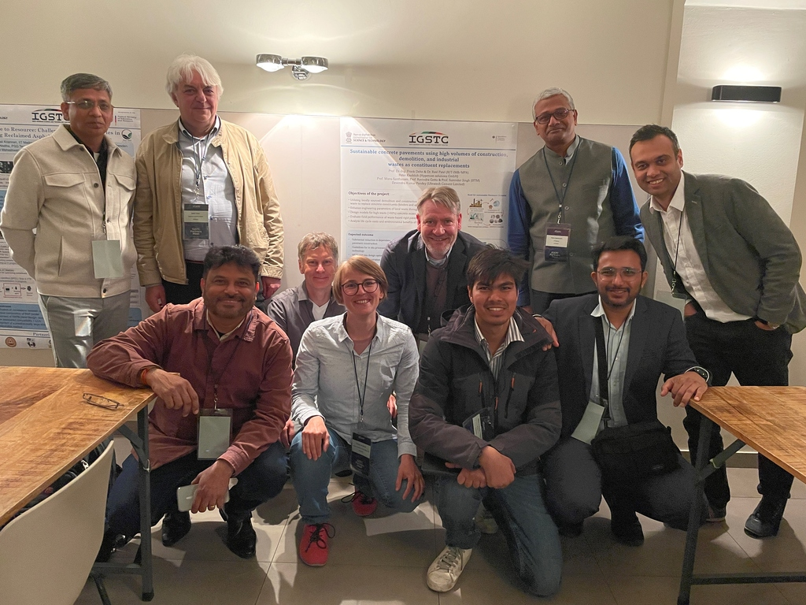

Welcome
We are members of working group Numerical Modeling and Digitization of Building Materials and Concrete Structures led by Dr. Ravi Patel (ravi.patel@kit.edu). Our working group is part of Institute of Building materials and concrete structure (KIT-IMB/MPA/CMM). We work at the interface of computaitonal science, material science and civil engineering to address the pressing challanges faced by building material sector. Our research group deals with topic such as microstructure representation porous building materials, multiscale modeling, advanced multiphysics modeling using finite elements and description of the building material behavior using artificial intelligence and machine learning as well as the representation of the microstructure of concrete using thermodynamic modeling to predict the durability-relevant properties and mechanical characteristics of concrete.
The group collaborates across engineering and applied sciences, combining simulations and experiments.
News
News Item 1
Details about news item 1.
News Item 2
Details about news item 2.